聖母被昇天大聖堂/オアハカ Basilica de Nuestra Senora de la Soledad/oaxaca
そんなこんなで市場を抜け出し、名もわからない小さな教会で一休み。
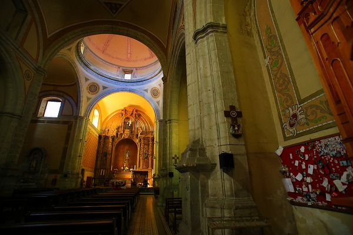
するとここにも小さな写真がびっしり貼られているではないか。
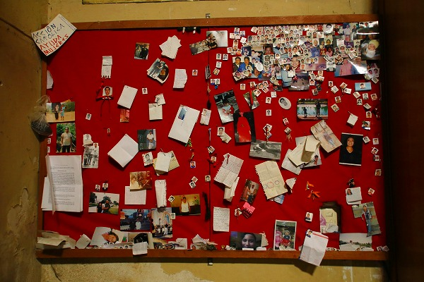
教会に来ていた人に聞いたら、どうやら死んだ人の供養ではなく、生きている人（というか自分の家族や友達）の写真を貼り、その人たちの幸運を祈るものなのだとか。
絶対死んだ人の供養だと思うよねえ。ね？ね？（え？俺だけ？）
教会の外が賑やかになって来たので通りに出てみた。
するといきなり大きな人形が回転しながら踊っている。
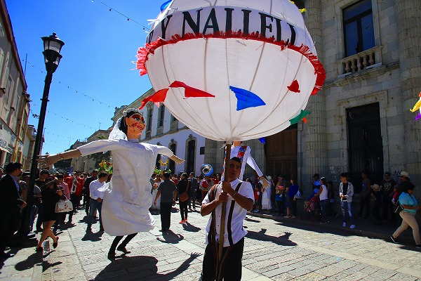
おおお、何だか楽しそうだぞ。
民族衣装を着たお嬢さんたちの踊り。
そしてキメッキメのジャケットを来た楽団の皆さん。
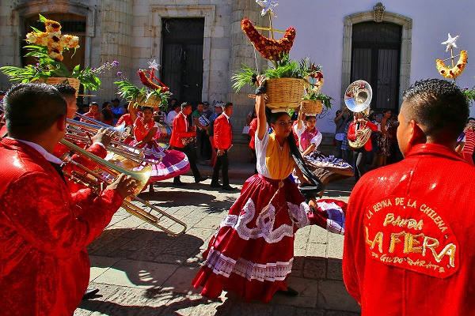
そう、これは
結婚式の行列だったのだ。
陽気なメキシカン音楽と共に新郎新婦やその家族、友人が沿道の人々の祝福を受けながら通り過ぎていく。
まるで映画のワンシーンのようで、何だか皆がとてつもなく幸福そうに見えた。
今の日本はこういう冠婚葬祭の行事をあまり表にしないでクローズな場所でやるようになってしまった。
この風景を見ていると、日本の社会の中から何か大切なものが誰も気付かない内にするりと抜け落ちてしまったような気がする。
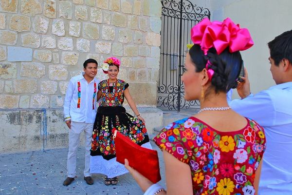
物凄い素敵な衣装を来た参列の方々。
女性のドレス、これ全部刺繍ですよ！凄くないすか？
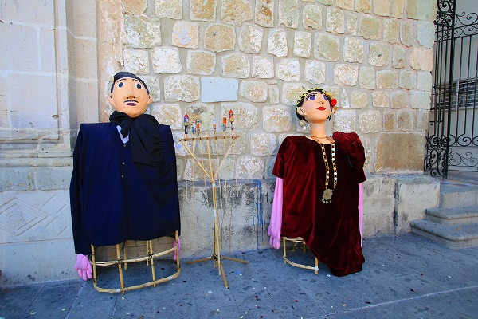
道端で休憩中の大人形。
形状としては
愛知県の猩々人形に似ている。
素敵な女性の驚くほど美しい民族衣装にうっとりしていると、近くから「俺も撮れ！」と近づいてくる輩あり。
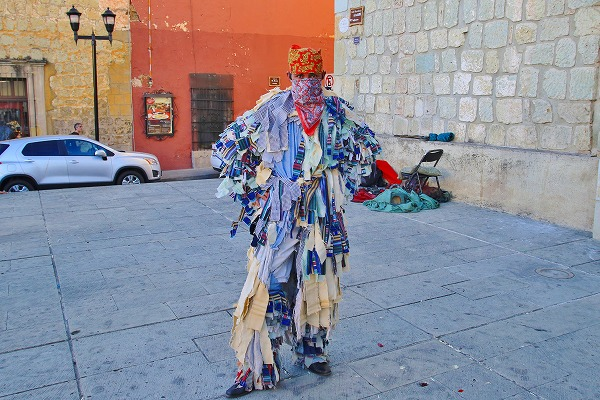
彼も行列の一員なのだろうが、ボロボロの切れ端を身に纏っていた。
祝祭における悪魔か乞食の役どころなのだろうか。
次に訪れたのは
ラソレーダ教会 Basilica de Nuestra Senora de la Soledad。
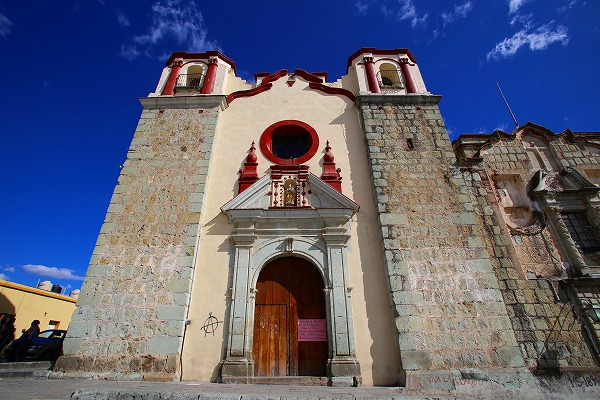
聖母が降臨したという伝説がある、
信仰上オアハカで一番重要な教会とされる教会だ。
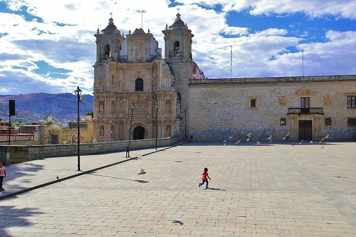
教会前の広場は市民の憩いの場となっていた。
女の子が鳩の群れを必死に追いかけている光景がやけに染みた。
で、内部。
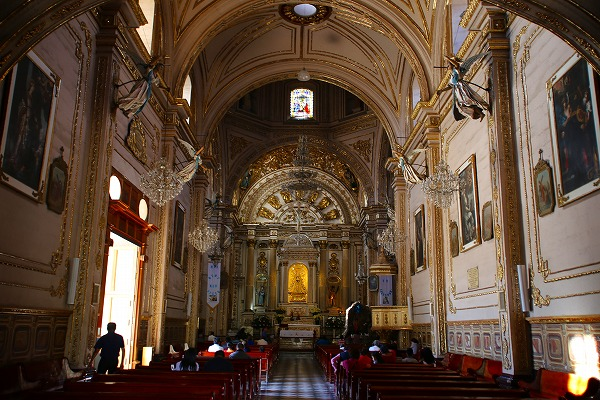
聖母が出現したという伝説により、教会が建てられたという。
このような
奇跡譚に由来する教会はメキシコ全土にあり、それぞれが聖地となっている。
ここもそのような聖地のひとつなのだ。
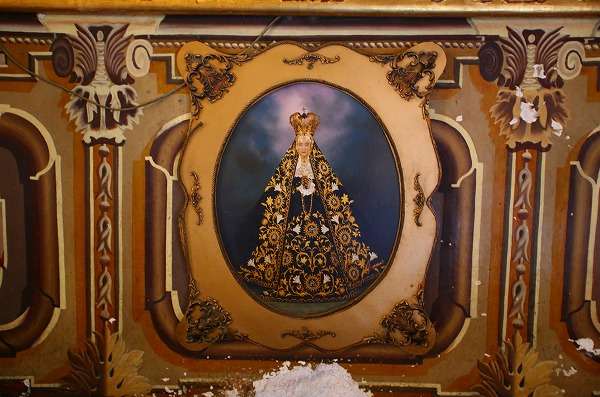
出現した聖母はこんな姿だったらしい。
全身を宝飾で纏った姿はまさにウルトラバロックそのものだった、
次の修行へＧＯ！